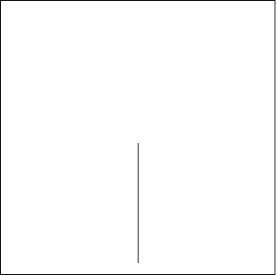

1.C. Initiators and Generators
A tree

Here is the initiator of a binary fractal tree. The generator is a copy of the initiator with two smaller branches growing symmetrically from the top. Click the picture to start the iteration.
Changing the branching angle (and the branch scaling so the branches overlap only on their tips), gives a sequence of fractal trees, including a few familiar shapes. Click the animation to stop.
Return to
Initiators and Generators.